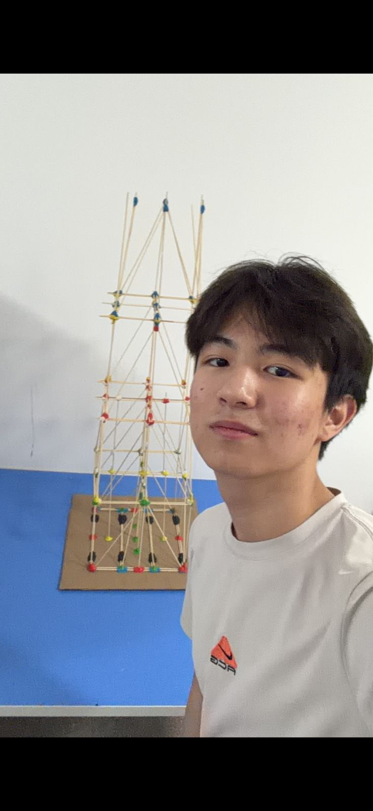

Всем привет! Меня зовут Дарын, мне 15 лет. Я учусь в Республиканской физико-математической школе (РФМШ).
Моя главная страсть — это технологии. Я серьезно занимаюсь олимпиадным программированием и создаю различные инженерные проекты. Мне нравится решать сложные задачи, придумывать что-то новое и воплощать идеи в жизнь с помощью кода.
В свободное от учебы время я стараюсь поддерживать баланс между умственной и физической активностью. Я очень люблю играть в баскетбол. Кроме того, я большой меломан и люблю слушать музыку, чтобы расслабиться или поймать вдохновение.